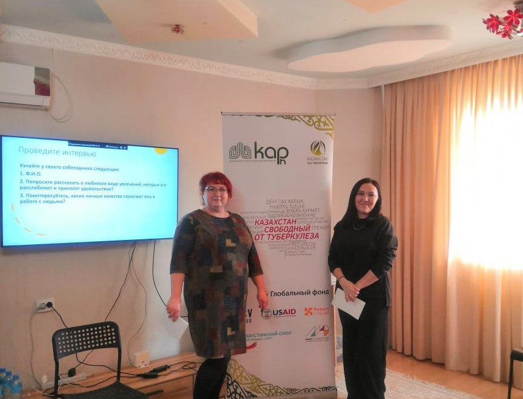
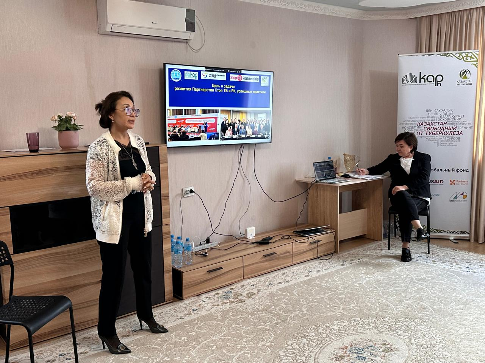
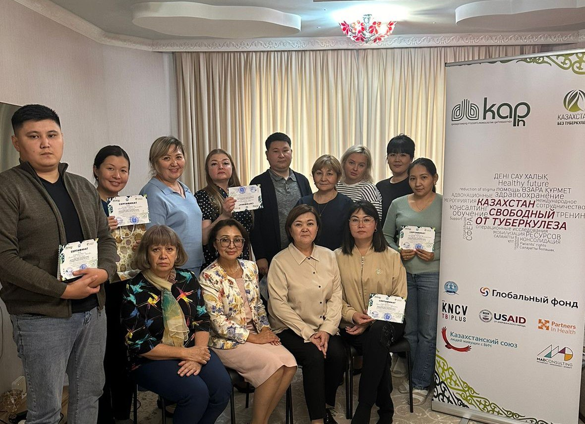
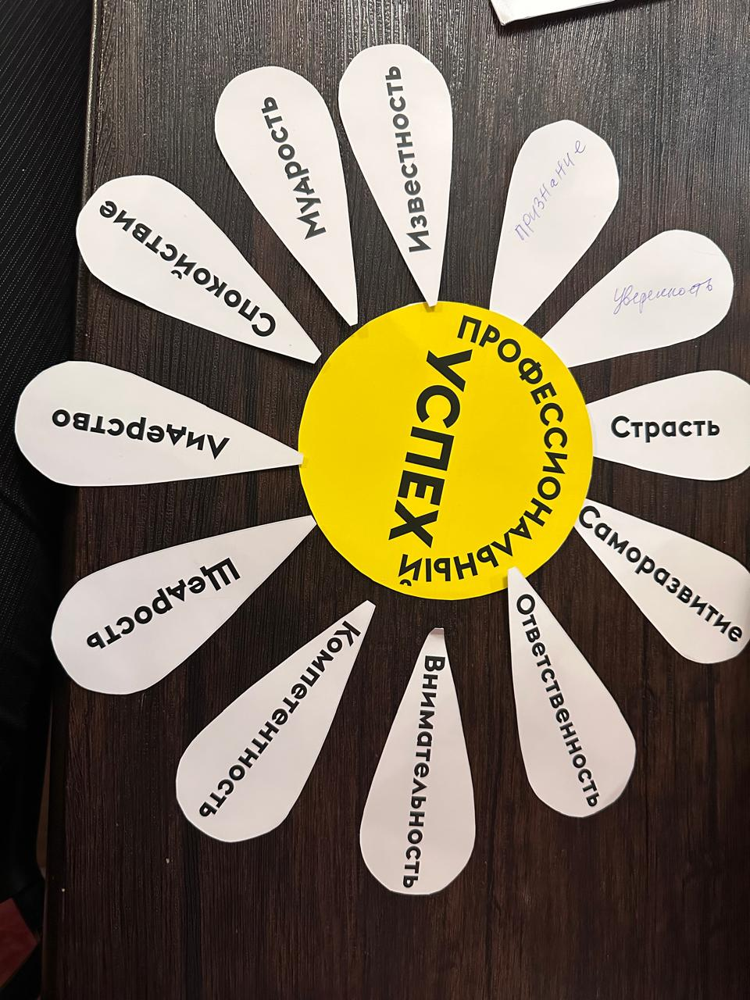
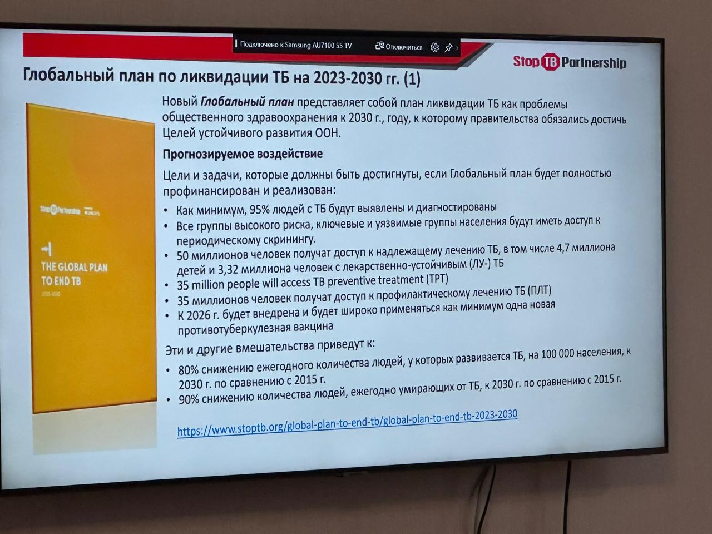
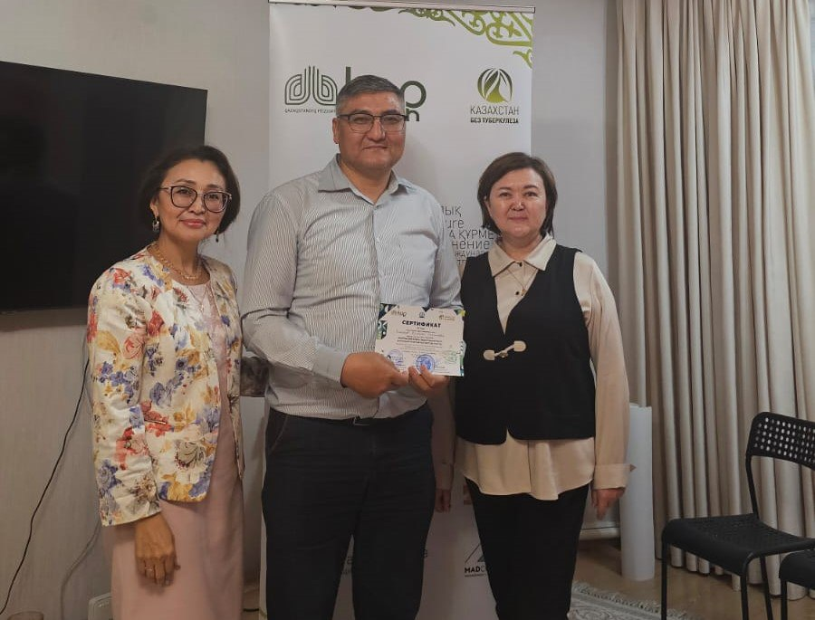
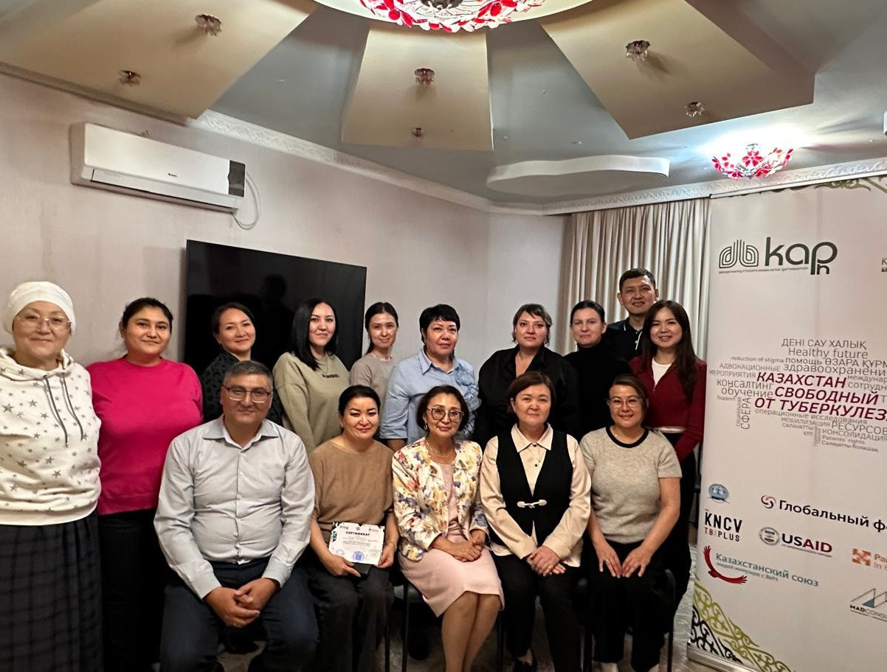

18 октября 2024
В Усть-Каменогорске для ответственных специалистов центра фтизиопульмонологии, ПМСП, НПО и других партнеров, участвующих в туберкулезной программе состоялся двухдневный тренинг «Ресурсы для успеха: эффективная работа в условиях развития Партнерства Стоп ТБ», организованный в рамках реализации гранта Партнерства Стоп ТБ «Усиление ответных мер в рамках многосторонних партнерств с заинтересованными сторонами».
Организаторами тренинга выступили ОО «Казахстанская ассоциация фтизиопульмонологов», Национальное партнерство «Остановим ТБ в Казахстане» и Национальный научный центр фтизиопульмонологии МЗ РК.
 Цель – развитие коммуникативных навыков участников тренинга в вопросах взаимодействия с партерами, пациентами и их близким окружением, сталкивающимися со стигматизацией, связанной с туберкулезом.
 В ходе тренинга были рассмотрены значимые темы: - Партнерство Стоп ТБ: глобальные и национальные стратегии - Роль НПО в снижении бремени туберкулеза - Стигматизация туберкулеза: причины, последствия, пути решения - Вопросы профессионального и эмоционального выгорания, с акцентом на внешние и внутренние факторы влияния
Тренинг стал площадкой для обмена опытом и формирования единой стратегии в борьбе с туберкулезом, а также укрепления сотрудничества между медицинскими учреждениями, НПО и другими организациями. Участники отметили, что это способствуют не только улучшению качества медицинских услуг, общему повышению профессиональных навыков, осведомленности общества о проблеме туберкулеза, но и личностному росту.
#endTB #мыпобедимТБ #профессиональныйуспех #Партнерство #тренинг #развитиепартнерствастопТБ #НПОвсфереТБ #стигмавотношенииТБ #выгораниеврачей #шқофпо #вкофпц #ШҚОфтизиопульмонологиялықорталығы #вкофтизиопульмонологическийцентр #вко #бізтуберкулездіжеңеаламыз #мыможемпобедитьтуберекулез #стоптуберкулез #stoptb #туберкулез
